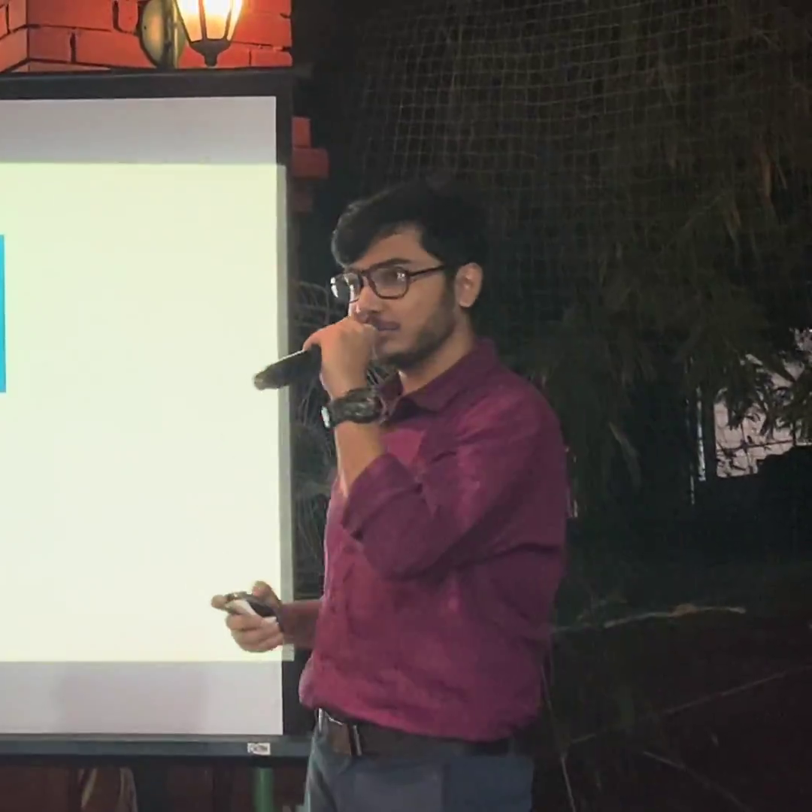

Drug–Adverse Event Reasoning with Knowledge Graphs
Multi-source reasoning across CADEC, RxNorm and OAE with entity linking, semantic retrieval and interpretable graph-path evidence.
Explore ↗I'm Anirudh — an AI/ML engineer, researcher and builder. I like doing ambitious work properly, explaining it clearly, and remaining a cheerful human being while all of that is happening.

I like projects that make me learn something, prove something, or ship something. Preferably all three.
My research tends to orbit capability amplification, reasoning, evaluation and ways of getting better AI systems without blindly reaching for a bigger model.
Multi-source reasoning across CADEC, RxNorm and OAE with entity linking, semantic retrieval and interpretable graph-path evidence.
Explore ↗HumanEval experiments across self-consistency, structured reasoning, planning, refinement, recursive criticism and test-based enhancement.
See experiments ↗Tool use, failure analysis, evaluation, enterprise capability exposure and the engineering required to make agentic systems dependable.
The trajectory matters more to me than a wall of technology logos.
Robotics, computer vision, reinforcement learning, information retrieval, bio-inspired learning, data science. A very healthy amount of curiosity.
Enterprise software foundations turned into anomaly detection, predictive ML, explainability and production constraints.
Prompt engineering, code generation, retrieval, document intelligence, knowledge graphs and inference-time methods.
Agents, evaluation, reusable AI platforms, enterprise integrations and the architecture that lets other engineers move faster too.
I care deeply about doing things well. I just don't believe that requires looking permanently grave. I write, draw, travel, make videos, obsess over films, get on stages, tell jokes, and occasionally spend far too long making something look just right.
At work, that same energy shows up as technical communication, customer demos, teaching, architecture discussions and getting people excited enough to actually use what we build.

Do everything sincerely.
Take nothing seriously.
AI engineering, research, agents, evaluation, open source, startup ideas, writing, cinema, or just an unexpectedly good conversation — I'm usually game.